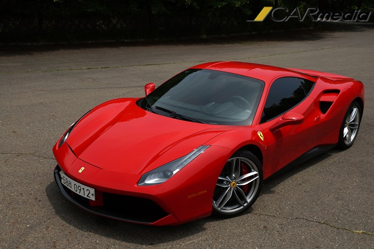
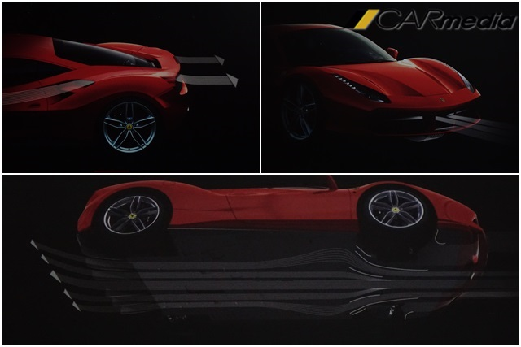
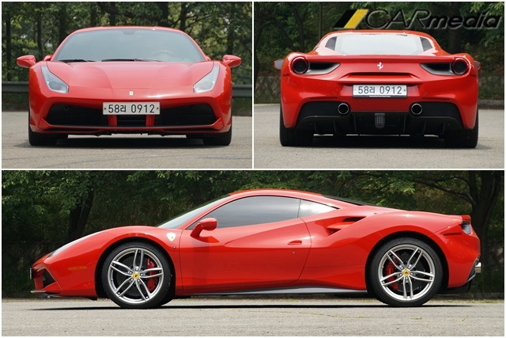
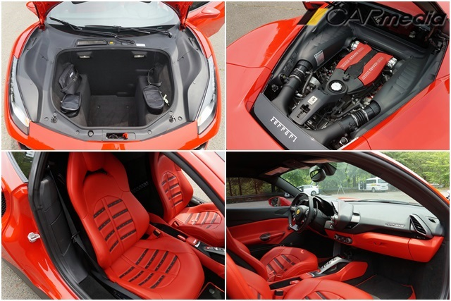
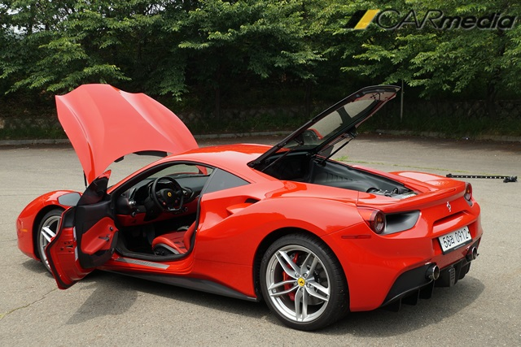
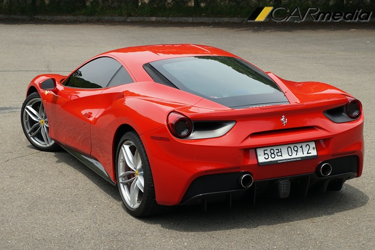

페라리 488GTB의 위대한 ‘다운포스’
【카미디어】 장진택 기자 = 시승기는 일종의 감상문이다. 여행을 다녀와 기행문을 쓰는 것처럼, 차를 타보고 그 느낌을 서술한다. 여행지에 며칠 동안 머물며 구석구석 뒤지면 훌륭한 기행문이 나온다. 반면, 시간에 쫓겨 대충 훑어본 기행문은 쓰는 이나 읽는 이 모두를 머쓱하게 만든다. 페라리 488GTB의 시승기를 쓰는 심정이 그렇다. 기껏 4시간 타보고 키보드를 두드리는 손가락이 몹시 처량하다. 그나마 영상이 있어서 다행이다. 아래 영상은 지난 6월 14일, 페라리 488GTB를 4시간 정도 몰고 다니며 찍었다.
(대략적인 시승 느낌은 영상에서 다 얘기했으므로, 아래 글은 '다운포스' 중심으로 썼다) 페라리 488GTB의 가장 큰 특징은 자연흡기 엔진 대신 터보 엔진이 들어갔다는 것. 하지만 터보 엔진보다 눈에 띄는 건 이 차의 ‘위대한 다운포스’다. 속도를 높일수록 바닥으로 파고드는 ‘다운 포스’를 만들어 ‘고속’을 안정적으로 즐길 수 있게 했다. 페라리는 F1 경주차를 만들며 채득한 ‘다운포스’ 기술을 양산차에 집어 넣고 있다. 속도를 높일수록 세차게 흐르는 공기가 차를 꽉 누르도록 설계하는 것이다. 페라리에서는 공기 저항을 줄이는 것보다 ‘다운포스’를 만드는 게 중요하다고 말한다.
페라리 488GTB의 공기저항계수는 0.323으로, 현대 아이오닉(공기저항계수 0.24)보다 공기저항을 많이 받는다. 그런데 이 공기저항은 대부분 다운포스를 위한 저항이다. 세차게 흐르는 공기를 (유연하게 흘려보내는 게 아니라) 효과적으로 꺾어 차를 바닥으로 누르는 것이다. 페라리 488GTB는 시속 200km로 달릴 때 325kg의 무게가 차를 누른다고(다운포스) 한다. 참고로 360 모데나 시절에는 시속 200km 다운포스가 80kg에 불과했다. 이후 F430은 120kg, 458은 이걸 140kg까지 늘렸다가 488에서는 325kg까지 진화한 것이다.
 페라리 488GTB는 이전 458과 방향이 조금 다르다. 이전 모델들은 일단 새로운 디자인으로 시선을 끌고, 매력적인 파워와 엔진 사운드 등을 통해 부자들의 주머니를 열었다. 반면 488GTB는 이전 458이 골격을 더욱 단단하게 다듬으면서 그 속에 (자연흡기 엔진이 아닌) 3.9리터 터보 엔진을 넣었다. 새로운 형상으로 시선을 끌기보다, 업그레이드된 파워, 안정적인 주행감 등이 돋보이도록 만들었다.
 488GTB가 매우 편해졌다. 슈퍼카는 다소 불편함을 감수하고 타는 차였지만, 488GTB는 웬만한 스포츠 세단 수준으로 편안하게 달릴 수 있다. 핸들링과 서스펜션, 엔진과 변속기 등이 (살살 몰면) 무척 온순하다. 괜히 격한 반응을 보이거나, 딱딱하게 조여진 게 아니여서 누구나 쉽게 몰 수 있는 슈퍼카가 됐다. 구석구석 늘어난 수납공간, 전동식으로 조절되는 시트와 운전대, 앞-뒤를 비추는 카메라, 좋은 음질의 오디오 등도 이 차의 편안함을 물심양면으로 돕고 있다.
페라리 488GTB는 3억4천만원부터 시작된다. 시승했던 차는 이러저러한 옵션을 더해 대략 4억원 가량 된다고 한다.